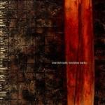

Music Reviews
-
Richard Buckner Surrounded
Following up on 2011's Our Blood, the veteran American singer/songwriter returns with another set of scorched-earth slow jams.
Ben Jones reviews -

Nine Inch Nails Hesitation Marks
In Nine Inch Nails' first record in five years, Trent Reznor takes listeners on an hour-long journey through distinct, rhythmic soundscapes that stand out in the band's catalog.
Joe Marvilli will not hesitate in recommending this album... -
Factory Floor Factory Floor
It's here! After years of waiting the London-based post-industrial act's debut album is finally here!
Mark Davison eagerly anticipated unwrapping this one... -
Arctic Monkeys AM
British music's most valuable commodity sheds another skin and add a 5th outstanding record to their already bejeweled crown, officially completing the transition from tracksuit-clad boys to leather-donning men.
Carl Purvis has the privilege of reviewing this one... -

AlunaGeorge Body Music
Some of us have been banging on about AlunaGeorge for the best part of two years now. Can the debut album from the London duo live up to expectations?
Joe Rivers is kinda buzzed, and it's all because... -

Neko Case The Worse Things Get, The Harder I Fight, The Harder I Fight, The More I Love You
The Virginia singer/songwriter's latest manages to create a painful outpouring of honesty, one that strikes that coveted balance of both melodic and lyrical expression.
Gabbie Nirenburg reviews... -
Chelsea Wolfe Pain is Beauty
With her fourth album since 2010, singer/songwriter Chelsea Wolfe favors the gothic rock influence, creating an album that is haunting and starkly gorgeous.
Bill Haff reviews... -
The Dodos Carrier
The San Francisco duo's reflective fifth release was loosely inspired by the passing of touring member Chris Reimer, one that slightly shifts their polyrhythmic brand of folk.
Juan Edgardo Rodríguez reviews... -
Drenge Drenge
The hotly-tipped guitar/drums duo that even made an appearance in a Labour MP’s open resignation letter... They couldn’t have cared less.
Carl Purvis is listening to this again and again... -
Arca &&&&&
Tangled cables, dirty dishes, shadows shading fake indoor plants and foreign language dictionaries. Welcome to the music of Arca.
Michael Iovino reviews...